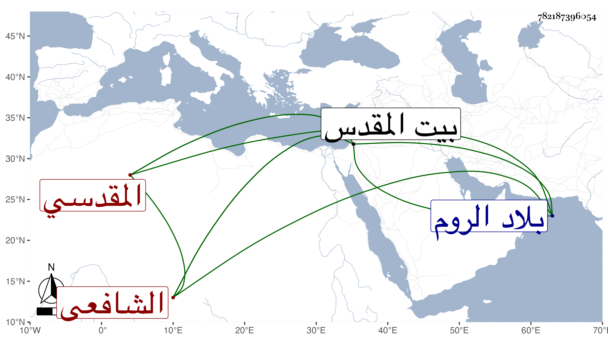

0902Sakhawi.DawLamic.ITO20230111-ara1.EIS1600.782187396054
Biography ID: 782187396054
468
عبد الرحيم بن محمد بن إسماعيل بن علي بن الحسن بن علي بن إسماعيل بن علي بن صالح بن سعيد الزين والشرف بن الشمس بن التقي القلقشندي ثم المقدسي الشافعي سبط الحافظ العلائي ووالد أحمد وعلي وأخو عبد الرحمن وأبي بكر ويعرف كسلفه بابن القلقشندي . ولد في رمضان سنة تسع وستين وسبعمائة ببيت المقدس ونشأ به فحفظ القرآن وكتبا واشتغل على أبيه وغيره ، وفضل وتميز حتى صار عين الشافعية ببلده وسمع بأخباره من جده التقي الصحيح أخبرنا به الحجار ووزيرة ، وكذا سمع على الزيتاوي وغيره ، ودرس بأماكن وولي خطابة الأقصى شركة لغيره ، قال التقي بن قاضي شهبة في طبقاته رأيت خطه على فتوى تدل على كثرة استحضاره وجودة تصرفه قال ولما سكن الهروي هناك حصل بينهما شرور كثيرة ومرافعات وقوى الهروي عليه انتهى . والفتيا المشار إليها كانت وردت في سنة ست عشرة من الروم تتضمن السؤال عن أمور وردت من مخلول أو مجنون ولكن لم أقف على الأجوبة فأعرضت عن كتابتها ، وقد لقيه ابن موسى في سنة خمس عشرة ببيت المقدس فأخذ عنه ووصفه بالامام العلامة شرف الدين وكان رفيقه في الأخذ عنه الموفق الأبي . مات في آخر سنة عشرين عن أزيد من خمسين سنة ورأيت من أرخه في صفر سنة إحدى وعشرين رحمه الله .
